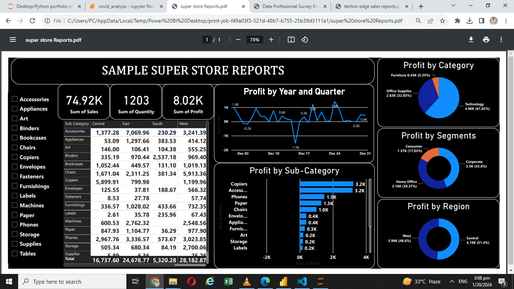
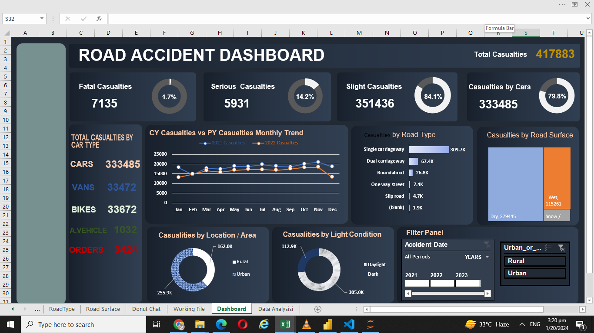
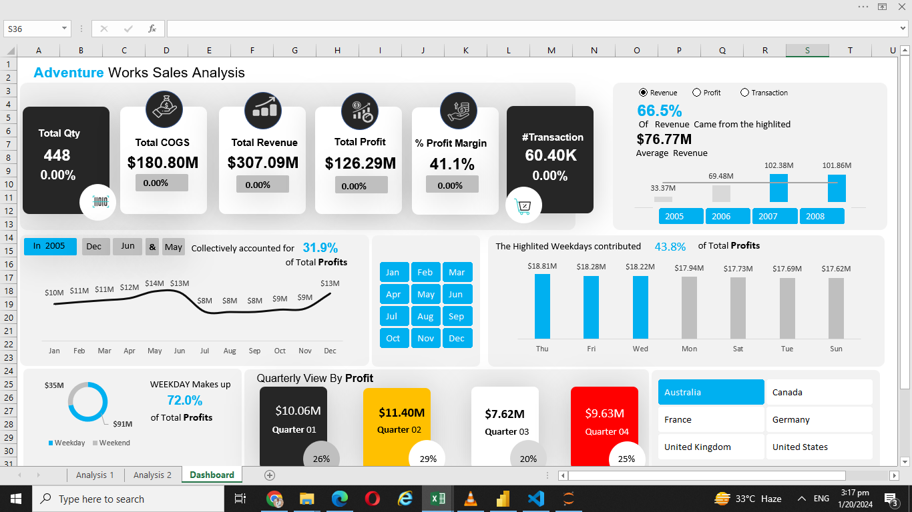
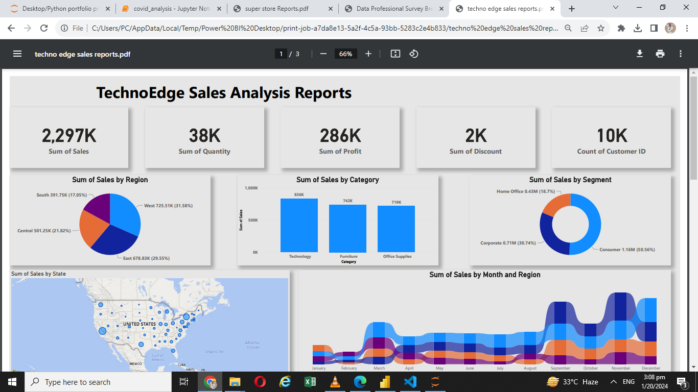
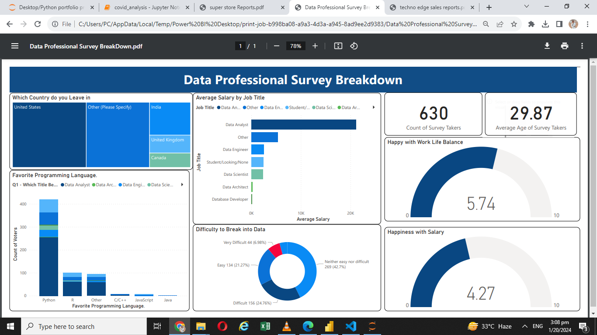
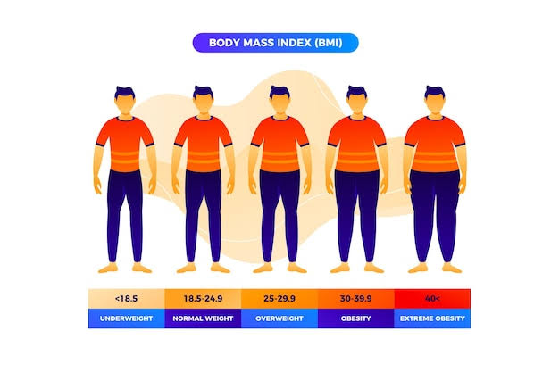
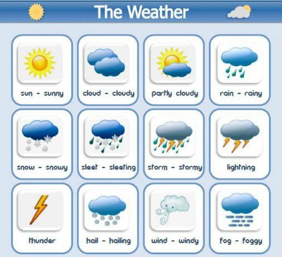
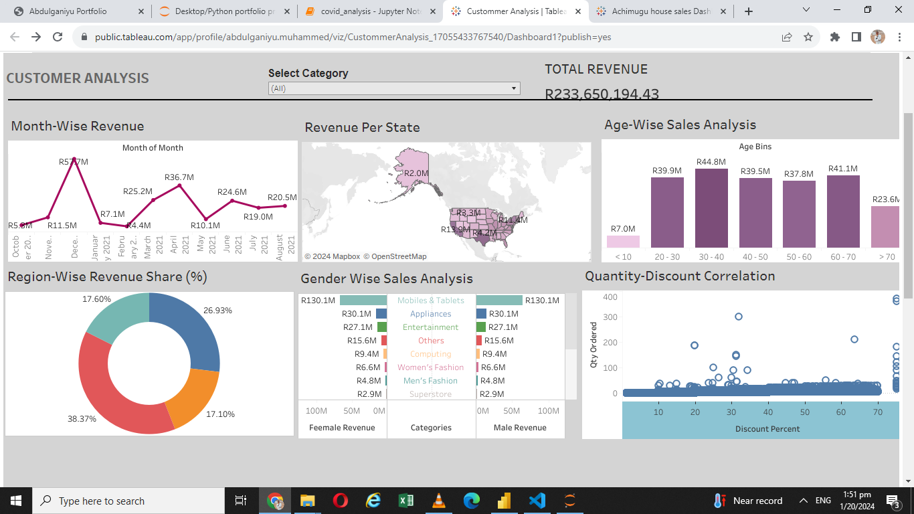
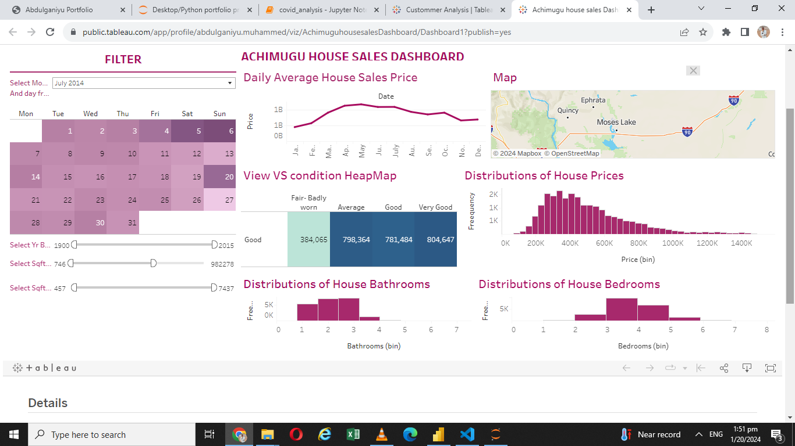

Data analyst proficient in Excel, powe BI, Python, Tableau and SQL.
Experties includes data visualization, analysis and interpretation.
Proven abi lity to derive actionable insights, implement data driven strategies
and optimize processes. Strong Communication Skills, with a track record of delivering impactful
reports and recommendations.


In this project I try to Analyize and gain insight in to Data Job placement in the united state using python programming Language to perform the following task:
- Analyzing Average Salary Base on Country and Job Title.
- Calculate Projected Salary Next Year.
- Distribution of United State Data analyst Yearly Salaries.
- Top 10 Job Locations for Data Analyst Jobs in the United States.
- Top 10 Companies for Data Analyst Jobs in the United States.
- What are the most demanded skills for the top 3 most popular data roles.
- Trending Top Skills for Data Analyst in the US.
- How well do Job and Skills Pays for Data Analyst.
- Investigate Median Salary VS Skills for Data Analysts.
- What is the most Optimal skills to learn for Data Analysts.

In this project I created new database using MYSQL Bench and create all the neccesary tables and insert data into the tables for the analysis :
- What is the total amount each customer spent at the restaurant.
- How many days has each customer visited the restaurant.
- What was the first item from the menu purchased by each customer.
- What is the most purchased item on the menu and how many times was it purchased by all customers.
- Which item was the most popular for each customer.

In this project I take an Employee Lay offs data and Perforned Data Cleaning Operations (EDA) using SQL:
- Remove Duplicate from the data.
- Standardizing the date such as correcting the Data type, correcting unneccasry spaces in the data
- Dealing with null and empty values
- Delete or remove unneccesary records and column from the tabless.
In this project I take a Walmart sales data analyze the data using SQL to perform the following task.
- What is the most selling product line.
- What is the total revenue by months.
- Which month has the highest Cost of Good Sold.
- What is the city with the largest revenue.
- which of the branch sold more product than average product sold.
- hich time of the day did customer give most rating per branch.

In this project I take an Employee Lay offs data and Perforned Exploratory Data Analysis (EDA) using SQL:
In Performing the exploration on the data i make use of the following SQL function and formula
MAX,MIN,SUM,COUNT,SUBSTRING, ORDER BY, GROUP BY, PARTIONBY,CTE.Temp table and lots more.

In this project I take Digital Musics data Containing differen country data and answer the following questons using SQL:
- Write query to return the email, first name, last name & Genre of all Rock music listens.
- Let's invite the artist who has written the most rock song in our data set
- Return all the track names that has a song lenght longer than the average song lenth
- find how much amount spent by each customer on artists
- Most popular music genrre for eah country
- customer thta spend the most on music for eah country

In this project we use pzzas data to perform the following analysis:
- Retrieve the total number of order placed
- Total Revenue generated from pixas sales
- Identify the most common pizzas size ordered
- List top 5 most ordered pixazz type along their quantity
- Determine the distribution of orders by hours of the day
- Calculate the percentage contribution of each pizzas type to total revenue
- Calculate the average number of pizzas order per day

In this project I take Indian Census data and perform the following analysis using SQL:
- population of india
- Average Growth Percentage
- average sex ratio by state
- Top 3 state showing highest growth Rate
- Top and buttom 3 literacy state using temp tablle
- State starting with a
- Population in Previous Census. And lots more try and check it out.

In this project I Design Crime Reporting Dashboard Using Power BI to Answer the following Analytical questions:
- Total crime.
- Criem by Years.
- Crime time Range.
- Crime by Month/Weekdays.
- Crime Monthly Trends.
- Crime by Countries.
- Dangerous Crime Time.
- Low Crime Time.

In this project I Design Patients Emergency Rooms Visit Report in Power BI:
- Total Patients Visit.
- Total-Patients by Age Group.
- Total-Patients Visits by Year.
- Gender BreakDown.
- Total-Patients by Department Referals.
- Patients Wait Time.
- Average Satisfaction.

In this project I Design HR Analysis Dashboad Design in Power BI to Answer the following Analytical questions:
- KPI'S (Total Employees, Males Employess, Female Employees, On-Service, Lay-Offs, High-Ranking,Low-Ranking).
- Due and Not-Due for Promotions.
- Total Employee by job Levels.
- Total Employees by job Satisfaction Status.
- Total Employees by Over-Time.
- Total Lay-Offs.
- Service Years.

In this project I Design Ecommerce Sales Dashboard in Poweer BI to Answer the following Analytical questions:
- KPI'S (YTD Sales, YTD Quantity, YTD Profit, YTD Profit margin).
- Sales by Categories.
- YTD Sales by States.
- Top 5 Products by YTD Sales.
- Bottom 5 Products by YTD Sales.
- YTD Sales by Region.
- YTD Sales by Shipping types.

In this project I Customers Churn Analysis Dashboard in Poweer BI to Answer the following Analytical questions: :
- Customers by Gender.
- Customers by Activity Status.
- Customers by Products.
- Customers by Credit Cards.
- Customers by Countries.
- Customers and Churn Rate by Age Group.
- Customers and Churn Rate by Credit Scores.
- Customers and Churn Rate by Acccount Balance ID.

In this project i Design HR Dashboard in Excel.
- We take data and clean the data with Excel Power query.
- KPI'S (Total Employee, Attrition, Active Employees,Attrition Rate, Average age, Job Satisfaction rating).
- Total Employees by Gender.
- Department Wise Attrition.
- Attrition by Age Group.
- Education wise Attrition.
- Attrition by Job Roles.
- Attrition by Marital Status.

In this project I Design Super Store Report in Power BI.
- I take data and clean the data using power query.
- Profit by year and Quarter using line chart.
- Profit by Sub-Category using Horizontal Bar chart .
- Profit by Category using Pie chart.
- Profit by Region using donough chart .
- Creating Filters.
- Dashboard.

In this project i Design Road Accident Dashboard in Excel.
- We take data and clean the data.
- We look for (1) Fata Casualties (2) Serious Casualties (3) Slight Casualties.
- Casualties by Road type using horizontal Bar chart.
- Casualties by Road Surface using TreeMap .
- Casualties by day / night using donough chart.
- Casualties by location using donough chart.
- Creating Filters.
- Dashboard.

In this project I Design Adventure Works Sales Dashboard in Excel to answer the following Analytical questions:
- I take data and clean the data using Excel power query.
- KPI'S (Total Quantity, Total Revenue, Total Transaction, Total Profits,COG'S, Percentage profit margin).
- Top 5 Profitable products.
- Products pricing types.
- profit by Age group Distribution.
- Profit share of the top 5 customers VS orders.
- Creating Filters.
- Dashboard.

In this project I Design KIS Bussines Dashboard in Excel to answer the following Analytical questions:
- KPI'S (COGS, Total Revenue, Profit margin, Percentage Profit margin, Total Revenue, Total Target, Variance).
- Profit Trends and Month On Month growth rate.
- Profit by Weekdays.
- Revenue by Weekdays VS percentage Change.
- Revenue VS Target by Months.
- 5 Less Profitable customers.
- Creating Filters.
- Dashboard.

In this project I Design Ecommerce Sales Analysis Dashboard Design in Excel to answer the following Analytical questions:
- KPI'S (Sales, Profits, quantity, Number of Orders, Profit margin).
- Sales and Profits Analysis.
- Category wise Profits.
- Category wise Sales Share(%).
- Top 5 Sub-Category by Sales.
- Sales by States.
- Creating Filters.
- Dashboard.

In this project I Design Transportation Dashboard Design in Excel to answer the following Analytical questions:
- KPI'S (Total Passengers, Average Riders Per Trip, Buseiest Route, Least Busy Route).
- Buss Utillization by Time Range.
- Total Riders Yearly Distribution.
- Total Riders Monthly Distribution.
- Total Riders Weekdays Distribution.
- Buss Utillization Rate.
- Total Riders Base on Moment of Trip.
- Dashboard.

In this project I Design Coffee Shop sales Dashboard Design in Excel to answer the following Analytical questions:
- KPI'S (Total Sales, Total Footfall, Average Bill Per Person, Average Orders Per Person).
- Quantity ordered Base on hours.
- Category Distribution base on Sales.
- Top 5 Products Base on Sales.
- Orders on Weekdays.
- Percentage Size Distribution base on Orders.
- Creating Filters.
- Dashboard.

In this project I Design Techno Edge Sales Report in Power BI.
- I take data and clean the data using power query.
- Sum of sales by Region using pie chart.
- Sum of sales by Category using line chart.
- Sum of sales by Segment using donough chart
- Sum of sales by State using Map chart
- Creating Filters.
- Report.

In this project I Design Data Professional Survey BreakDown Report in Power BI.
- I take data and clean the data using power query.
- which country do leave in using TreeMap chart.
- Average salary by job title using horizontal bar chart.
- Favourite programming Language using bar chart
- Difficulties break into data using donough chart
- Creating Filters.
- Report.

In this project I made a simple BMI calculator.
Using Python

In this project I take dataset of different cars with their specification.
Aalyze the data using Python .

In this project I will analyze Netflix dataset, this dataset has the information about the TV shows and Movie availabe on netflix from 2021.
The dataset is collected from fixable which is third party Netflix search engine, and availabe on kago website for free.
We clean and analyze the data using Python.
In this project I scrape data from jiji.ng website to analyze price data for products
Using puthon.

In this project I takes 12 months salse data in CSV format combined them into single file using pandas
analyze the using Python-pandas.

In this project I collect a real time weather dataset with per hour information about the weather condition at a particular location.It record temperature, Dew Points Temperature,
relative humidity, wind speed, visibility, pressure and conditions.
We analyze and vitualize the data using Python.

In this project we take a real world data perform customer Cluster analysis using python-pandas and Sklearn Liberary .

In this project i created customer analyze Dashboard in Tableau with the following Featues.
- Revenue Per state using in Map.
- Revenue based on month of the year using line chart.
- Revenue base on age using Bar chart.
- Quantity - Discount Percentage correlation
- Percentage of Revenue per Region using donough chart
- Revenue per Category per Gender using butterfly chart
- Dashboard

In this project i created Dashboard for Achimugu House sales in Tableau with the following Featues.
- Daily Average House Sales Price using Line chart.
- View VS condition of the House using HeapMap.
- Distributions of House Prices using Bar chart.
- Distributions of House Bathrooms using Bar chart.
- Distributions of House Bedrooms using Bar chart.
- map for the location.
- Creating Filters and Callender.
- Dashboard.

In this project i use two different dataset (1) covid statewise dataset (2) vaccination dataset from India to perform the following task:
- I clean the data
- adding active case to the table
- Creating pivote table
- top 10 active cases state
- top 10 state with highest death case
- growth trends
- male vs female vaccinated
- most vaccinated state


{kind=link}
{kind=link}
{kind=link}